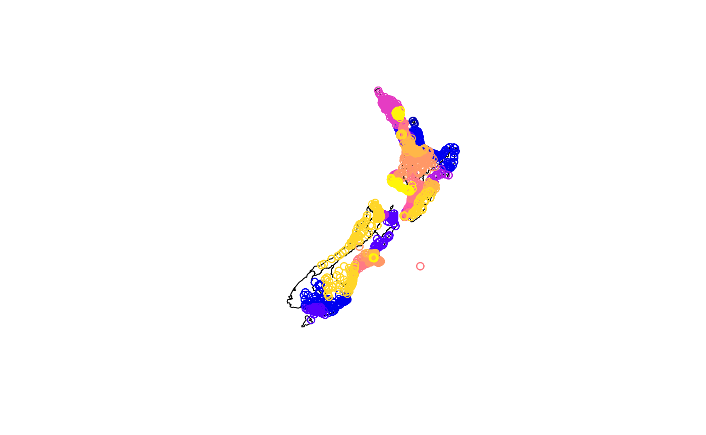

GIS_workshop1_Nowosad_Lovelace.RmdSlides: https://nowosad.github.io/SIGR2021/workshop1/workshop1_rl.html#1
size of a sample dataset: - small enough to be fast - but with edge cases
You can have multiple datasets (small/large, differents areas)
Robin recommends to create an example dataset to save time. Documenting it is recommended but not mandatory.
ActDev example: know where to stop R: R is the backend, the webapplication to visualise the data is in JS.
library(help ="datasets") # full list of datasetsListed datasets are available directly from R.
help(package = "spData")
?AirPassengers
library(spData)
plot(nz) # if list error, maybe because sf is not loaded yet and plot don't know how to plot sf objects
#> Error in data.matrix(x): 'list' object cannot be coerced to type 'double'
plot(nz$geom)
#> Error in xy.coords(x, y, xlabel, ylabel, log): 'x' is a list, but does not have components 'x' and 'y'Make a copy to work on is good practice.
nz2 = nz
plot(nz)
#> Error in data.matrix(x): 'list' object cannot be coerced to type 'double'
library(nzelect)
nz_lonlat = sf::st_transform(nz, 4326)
names(voting_places)
#> [1] "electorate_number" "electorate" "voting_place_id"
#> [4] "voting_place_suburb" "northing" "easting"
#> [7] "longitude" "latitude" "voting_place"
#> [10] "election_year" "coordinate_system" "TA2014_NAM"
#> [13] "REGC2014_N" "AU2014" "MB2014"
# create points from coordinates
voting_places_sf = sf::st_as_sf(voting_places, coords = c("longitude", "latitude"))
plot(sf::st_geometry(nz_lonlat))
plot(voting_places_sf, add = TRUE)
#> Warning in plot.sf(voting_places_sf, add = TRUE): ignoring all but the first
#> attribute
Filtering voting places that are inside NZ island
vsub = voting_places_sf[nz,] # Error message because mismatching CRS issues
#> Error in st_geos_binop("intersects", x, y, sparse = sparse, prepared = prepared, : st_crs(x) == st_crs(y) is not TRUE
sf::st_crs(voting_places_sf, error=TRUE) # NA
#> Coordinate Reference System: NA
sf::st_crs(nz) # EPSG:2193
#> Coordinate Reference System:
#> User input: EPSG:2193
#> wkt:
#> PROJCS["NZGD2000 / New Zealand Transverse Mercator 2000",
#> GEOGCS["NZGD2000",
#> DATUM["New_Zealand_Geodetic_Datum_2000",
#> SPHEROID["GRS 1980",6378137,298.257222101,
#> AUTHORITY["EPSG","7019"]],
#> TOWGS84[0,0,0,0,0,0,0],
#> AUTHORITY["EPSG","6167"]],
#> PRIMEM["Greenwich",0,
#> AUTHORITY["EPSG","8901"]],
#> UNIT["degree",0.0174532925199433,
#> AUTHORITY["EPSG","9122"]],
#> AUTHORITY["EPSG","4167"]],
#> PROJECTION["Transverse_Mercator"],
#> PARAMETER["latitude_of_origin",0],
#> PARAMETER["central_meridian",173],
#> PARAMETER["scale_factor",0.9996],
#> PARAMETER["false_easting",1600000],
#> PARAMETER["false_northing",10000000],
#> UNIT["metre",1,
#> AUTHORITY["EPSG","9001"]],
#> AUTHORITY["EPSG","2193"]]Voting_places_sf does not have a crs
Fixing issues
voting_places_sf <- sf::st_set_crs(voting_places_sf, st_crs(4326))
#> Error in st_crs(4326): could not find function "st_crs"
sf::st_crs(voting_places_sf)
#> Coordinate Reference System: NA
nz_lonlat <- sf::st_transform(crs = st_crs(4326))
#> Error in st_crs(4326): could not find function "st_crs"
vsub = voting_places_sf[nz_lonlat,]
#> Error in st_geos_binop("intersects", x, y, sparse = sparse, prepared = prepared, : st_crs(x) == st_crs(y) is not TRUE
plot(sf::st_geometry(nz_lonlat))
plot(vsub, add = TRUE)
#> Error in plot(vsub, add = TRUE): object 'vsub' not foundQuite informal but very very rich Interesting when you can’t access official data
Simple requests: {osmdata}
library(osmdata)
#> Error in library(osmdata): there is no package called 'osmdata'
schools_nz_osm <- opq(bbox = sf::st_bbox(nz_lonlat)) %>%
add_osm_feature(key = "amenity", value = "school")
#> Error in opq(bbox = sf::st_bbox(nz_lonlat)) %>% add_osm_feature(key = "amenity", : could not find function "%>%"skimr:skim : resume data
source("https://raw.githubusercontent.com/Nowosad/SIGR2021/master/workshop1/osm_combine.R")
# osm_combine() is available in the environnmentFor large dataset (> 100 MB)
library(osmextract)
#> Error in library(osmextract): there is no package called 'osmextract'Needs a place name, and parameters (date type (e.g. “amenity”) and an SQL query for the OSM server)
library(spData)
library(sf)
#> Linking to GEOS 3.9.1, GDAL 3.3.0, PROJ 8.0.1
library(tidyverse)
#> Error in library(tidyverse): there is no package called 'tidyverse'
nz %>%
filter(Island == "South")
#> Error in data.matrix(data): 'list' object cannot be coerced to type 'double'rmapshaper::ms_simplify
st_is_valid() : check if geometries are validst_make_valid() : fixes geometries